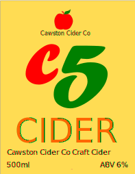
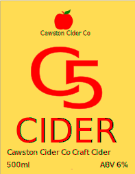
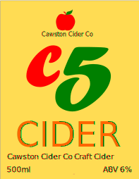
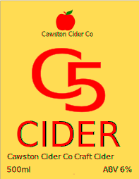

Our products
We pride ourselves in the products we manufacture and distribute. They are made to receipes that have come to us from generations who made cider from local apples. Today we use modern food safety and quality standards to deliver great products.
C5 stands for - Cawston Cider Co Craft Cider